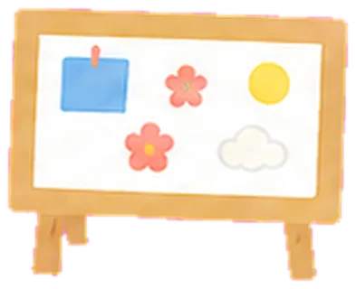

仕事と
仕事と
答え土日・平日・午前・午後・夜間の
地域連携
この
説明会って、
家から、
答え

サニー先生入学金なし・テキスト代こみで29万7,000円。
実質＝給付金で
この
運営者は、
ほかの
受けた
費用
申し込んだ
オンライン
オンラインで
日程
授業の
説明会
説明会が
気に
受講体験記を
よく
仕事と
仕事と
答え土日・平日・午前・午後・夜間の

通学に
働きながらの
答えすべて

振り
休んだ回を
答えZoom講習80時間の
横に

くわしく
受講料297,000円
専門実践教育訓練給付金の
国家試験の
モヤン29万7,000円で、

サニー先生の
公式サイト

くわしく
モヤン説明会って、
説明会はオンライン
| 種類と | 講座説明会 |
|---|---|
| 参加費 | すべて |
| 場所 | オンライン |
| カメラ | 原則ONです。 |
| 日程 | 2026年11月は、 |
| 申込み | フォームに |
出典：地域連携
申し込んだ
説明会の
めちゃくちゃ
Zoomの
わたし以外の
聞いて

くわしく
説明会に
| Q 合格率の | その |
|---|---|
| Q 受講を | おおよそ1%未満です。 |
| Q 給付金の | 制度の |
| Q オンラインだけで | すべて |
| Q 卒業した | 学校が |
| Q この | 学校と |
| Q 卒業後に、 | 「キャリア・ |
| Q 主婦・ママ・転勤族の | 集計していないので、 |
| Q 本番 | 「キャリア・ |
|---|---|
| Q 受講生は、 | 平均で |
| Q 資格を | 講義の |
| Q 休んだ | 合計16時間まで |
モヤン聞きにくい
サニー先生気に
どれも

くわしく
「組織と
ふり
やっぱり
受講料も
養成学校を
これまでに
自分の
わたしは、

くわしく
受けられる
講習名：キャリア
¥お金
◷時間と
講習時間は
↺休んだ
→修了した
学校への
モヤン振替が
サニー先生の
公式サイト

くわしく
説明会で
PR広告リンクです
説明会・質問会は
よく

この
キャリコン学びピクニック運営者
3児の
数字や
出典
学校の
学校の
受講を